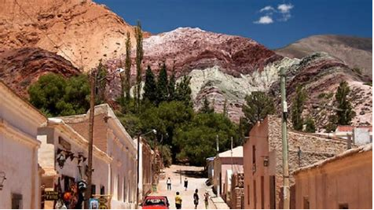

El Norte Argentino es una región rica en cultura, historia y paisajes naturales
impresionantes que atraen a
viajeros de todo el mundo. Comprende las provincias de Salta, Jujuy, Tucumán, Catamarca y Santiago del
Estero, cada una con su encanto único.
En Salta, conocida como "La Linda", los visitantes pueden disfrutar de su arquitectura colonial española,
recorrer la famosa Ruta del Vino en Cafayate y explorar paisajes espectaculares en la Quebrada de las
Conchas y el Parque Nacional Los Cardones.
Jujuy cautiva con sus colores vibrantes en las serranías y valles, como en la Quebrada de Humahuaca,
declarada Patrimonio de la Humanidad por la UNESCO, donde se encuentran pueblos pintorescos como Purmamarca
y Tilcara. Además, la región ofrece experiencias únicas como el Cerro de los Siete Colores en Purmamarca y
las Salinas Grandes, un vasto desierto de sal.
Tucumán, la provincia más pequeña de Argentina, es rica en historia. Los turistas pueden visitar la Casa
Histórica, donde se declaró la independencia de Argentina en 1816, y disfrutar de la belleza natural de las
Yungas en el Parque Nacional Campo de los Alisos.
Catamarca, conocida como la "Cuna del Sol", sorprende con sus paisajes montañosos, como el imponente volcán
Ojos del Salado, el más alto de América, y el espectacular Parque Nacional El Rey.
Santiago del Estero, la provincia más antigua de Argentina, ofrece a los visitantes la oportunidad de
sumergirse en la cultura indígena en lugares como el Parque Arqueológico de los Quilmes y de disfrutar de la
naturaleza en la Reserva Natural y Cultural El Bañado La Estrella.
En resumen, el Norte Argentino es una región fascinante que combina historia, cultura y paisajes naturales
extraordinarios, haciendo de cada visita una experiencia inolvidable para los turistas.
Salta: Conocida como "La Linda", Salta cautiva a los visitantes con su
arquitectura colonial
española,
sus paisajes montañosos y su rica cultura. La ciudad de Salta ofrece encantadoras plazas, iglesias
históricas y museos fascinantes. Además, en los alrededores, se encuentra la famosa Ruta del Vino en
Cafayate, donde se producen vinos de alta calidad en un entorno de belleza incomparable. La Quebrada
de
las Conchas y el Parque Nacional Los Cardones son destinos imperdibles para aquellos que buscan
explorar
paisajes espectaculares de montañas y formaciones rocosas únicas. 
 Esta provincia es famosa por sus paisajes de colores vibrantes y su rica herencia cultural. En la Quebrada de Humahuaca, declarada Patrimonio de la Humanidad por la UNESCO, los viajeros pueden maravillarse con pueblos pintorescos como Purmamarca, conocido por el Cerro de los Siete Colores, y Tilcara, donde se encuentra el Pucará de Tilcara, una antigua fortaleza preincaica. Las Salinas Grandes ofrecen un paisaje surrealista de vastos campos de sal que se extienden hasta el horizonte, mientras que las serranías y valles de la región son ideales para practicar senderismo y disfrutar de la naturaleza.
Esta provincia, conocida como "El Jardín de la República", combina historia, cultura y belleza
natural.
En la ciudad de San Miguel de Tucumán, los visitantes pueden visitar la Casa Histórica, donde se
declaró
la independencia de Argentina en 1816, así como también explorar plazas encantadoras y mercados
tradicionales. En las afueras de la ciudad, el Parque Nacional Campo de los Alisos ofrece
oportunidades
para realizar actividades al aire libre como senderismo y observación de aves, mientras que las
Yungas
tucumanas son ideales para los amantes de la naturaleza y la biodiversidad. 
Protégete del sol y mantente hidratado: El Norte Argentino puede ser bastante caluroso, especialmente durante el verano. Asegúrate de usar protector solar, llevar un sombrero y beber suficiente agua para mantenerte hidratado durante tus excursiones y paseos.
Adapta tu vestimenta: Aunque las temperaturas pueden ser altas durante el día, pueden descender considerablemente por la noche, especialmente en áreas de mayor altitud. Lleva ropa adecuada para el clima, incluyendo capas que puedas agregar o quitar según sea necesario.
Respeta la altitud: Algunas áreas del Norte Argentino, como la Quebrada de Humahuaca y los Valles Calchaquíes, están ubicadas a gran altitud. Si no estás acostumbrado a alturas elevadas, toma precauciones y descansa si sientes síntomas de mal de altura, como dolor de cabeza o mareos.
Explora la gastronomía local: No te pierdas la oportunidad de probar la deliciosa comida regional del Norte Argentino, que incluye platos como la empanada salteña, el locro, la humita y el tamal. También puedes disfrutar de vinos de alta calidad en la región vinícola de Cafayate, en Salta.
Respeta la cultura local: El Norte Argentino es rico en cultura e historia, con una fuerte presencia de comunidades indígenas. Sé respetuoso con las tradiciones y costumbres locales, y trata de aprender sobre su cultura durante tu visita.
Planifica con anticipación: Algunas atracciones turísticas pueden estar alejadas unas de otras en el Norte Argentino, por lo que es importante planificar tu itinerario con anticipación y considerar el tiempo de desplazamiento entre los lugares que deseas visitar.
"Visitar Salta fue una experiencia inolvidable. La ciudad combina historia y cultura con paisajes naturales impresionantes. La excursión al Tren a las Nubes fue el punto culminante de mi viaje."
"Jujuy me fascinó con sus colores y su cultura. El Cerro de los Siete Colores en Purmamarca es simplemente espectacular. Además, el ambiente en Tilcara es muy acogedor y lleno de vida."
"Tucumán me sorprendió gratamente. La Casa Histórica de la Independencia es un lugar imperdible y la naturaleza en el Parque Sierra de San Javier es perfecta para desconectar y disfrutar de la tranquilidad."